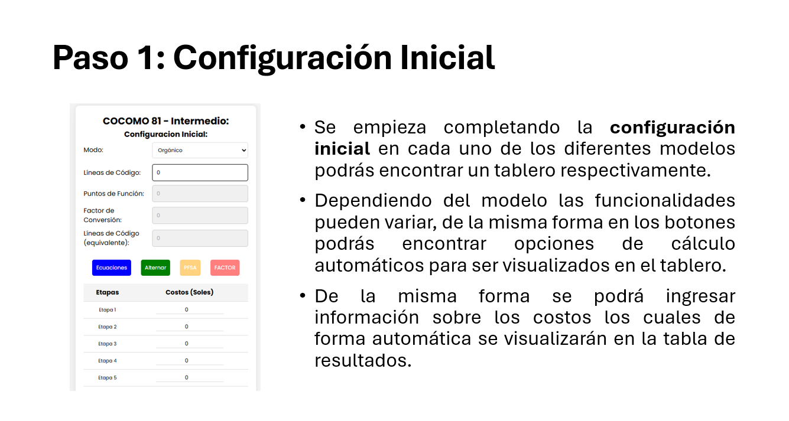
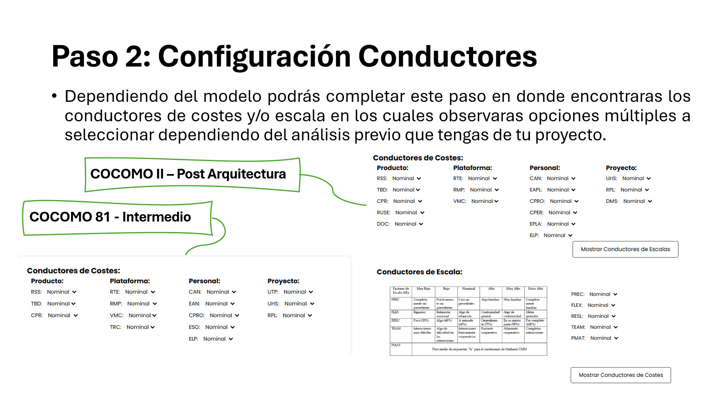
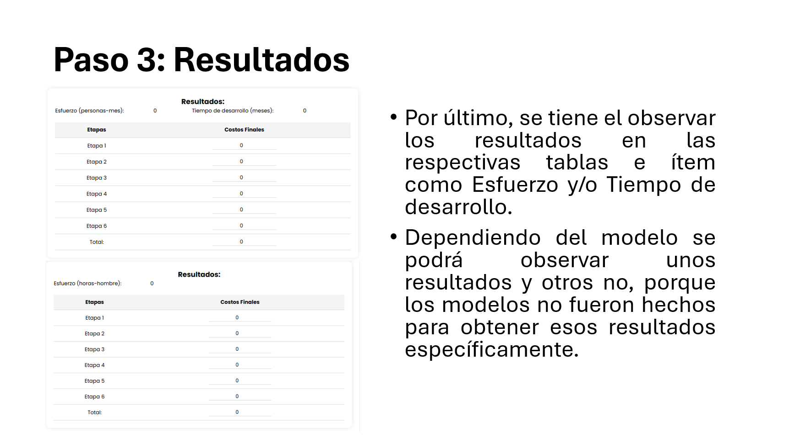
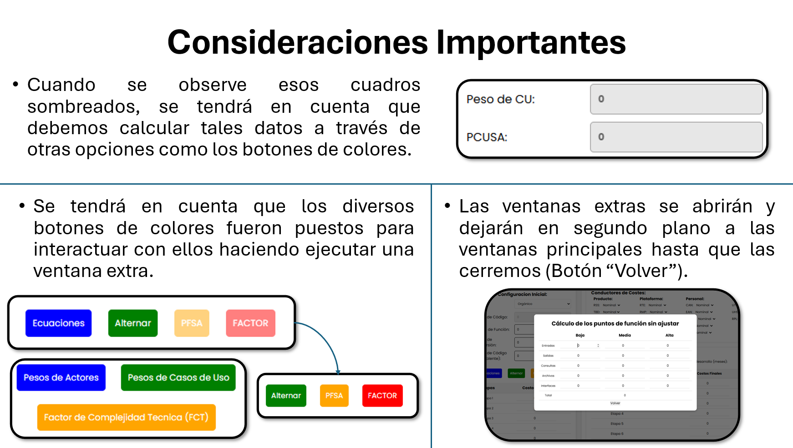

SoftChronoCalc
Inicio
COCOMO 81 Intermedio
COCOMO II P.A.
Puntos de Casos de Uso
Ayuda
SoftChronoCalc:
¿Quienes Somos?
En SoftChronoCalcy, nos enorgullece ser tu socio confiable en la estimación de tiempo, esfuerzo y costo para el desarrollo de software. Fundada con la visión de simplificar y mejorar el proceso de planificación de proyectos, nuestra herramienta ha sido meticulosamente diseñada para ofrecerte precisión y flexibilidad en cada etapa del desarrollo.
Nuestra Misión
Nuestra misión es empoderar a equipos y profesionales de desarrollo de software proporcionando una solución robusta y adaptable para la estimación de proyectos. Creemos que una planificación eficaz es la clave para el éxito y buscamos ayudarte a alcanzar tus metas con mayor facilidad y certeza.
¿Qué Ofrecemos?:
COCOMO 81 - Intermedio
COCOMO II - Post Arquitectura
Puntos de Casos de Uso
Puntos de Función
PASOS DE USO DEL SOFTWARE:
   
Contáctanos
Si tienes alguna pregunta o deseas saber más sobre cómo SoftChronoCalcy puede ayudarte en tus proyectos, no dudes en ponerte en contacto con nosotros. Estamos aquí para ayudarte a lograr el éxito en cada uno de tus desarrollos.
¡Gracias por confiar en SoftChronoCalcy!